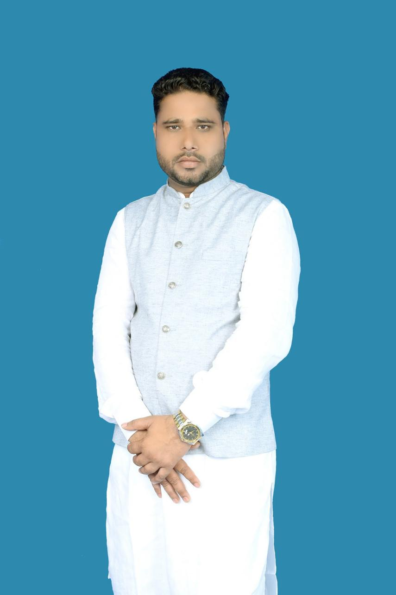

जनता का विश्वास,
विकास की पहचान
कैसर आलम आपके द्वार
मुखिया पद उम्मीदवार – तुलसिया पंचायत
इसी मिट्टी के बेटे, जनता के साथी और
विकास के संकल्प के साथ आगे बढ़ते हुए।

मुखिया पद उम्मीदवार

कैसर आलम आपके द्वार
मुखिया पद उम्मीदवार – तुलसिया पंचायत
इसी मिट्टी के बेटे, जनता के साथी और
विकास के संकल्प के साथ आगे बढ़ते हुए।

दिघलबैंक प्रखंड अंतर्गत तुलसिया पंचायत वर्ष 2026 के पंचायत चुनाव की दहलीज पर खड़ी है।
पंचायत की जनता आज ऐसे जनप्रतिनिधि की तलाश में है जो केवल चुनाव के समय दिखाई न दे,
बल्कि हर सुख-दुख और हर जरूरत के समय जनता के साथ खड़ा रहे।
युवा एवं ऊर्जावान उम्मीदवार कैसर आलम जनसेवा के संकल्प के साथ मैदान में हैं।
वे इसी मिट्टी की खुशबू से जुड़े हैं और पंचायत के लोगों की समस्याओं को करीब से समझते हैं।
"जनता का दर्द ही उनका दर्द है, और पंचायत का विकास ही उनका लक्ष्य।"
वार्ड संख्या 02, 03, 04 और 07 में नल-जल योजना से संबंधित समस्याएँ ग्रामीणों के लिए चिंता का विषय बनी हुई हैं। इन मूलभूत समस्याओं का समाधान प्राथमिकता के आधार पर होना चाहिए।
वार्ड
परिवार
नया विजन
मजबूत नेतृत्व


जनता की आवाज़ को पंचायत तक पहुँचाना
हर गली तक बेहतर सड़क व्यवस्था
हर घर तक स्वच्छ पेयजल उपलब्ध कराना
बेहतर शिक्षा और युवाओं को अवसर
अपने दुकान, स्कूल, व्यवसाय या चुनाव प्रचार को बढ़ावा देने के लिए हमसे संपर्क करें। प्रोफेशनल पोस्टर, बैनर, सोशल मीडिया डिज़ाइन और प्रचार सामग्री उपलब्ध।